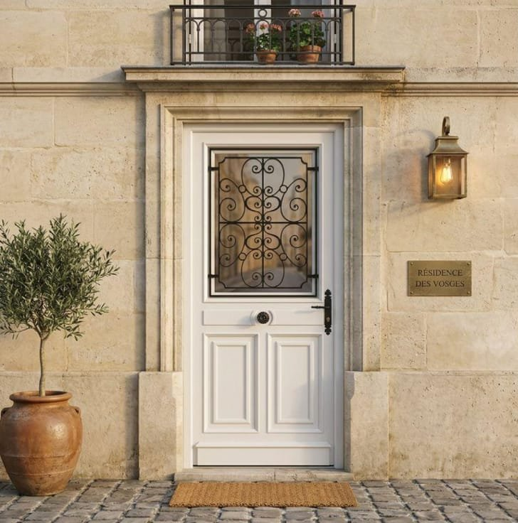

AbdelK HBnovembre 2026
Franchement, rien à redire ! Un serrurier qui répond, qui vient à l’heure et qui fait le boulot correctement… ça devient presque rare. Intervention rapide, travail…
Après un cambriolage ou une tentative d’effraction, un serrurier sécurise votre porte ou votre vitre à Orléans et dans sa métropole, 24h/24, pour que vous puissiez dormir tranquille en attendant la réparation.

Franchement, rien à redire ! Un serrurier qui répond, qui vient à l’heure et qui fait le boulot correctement… ça devient presque rare. Intervention rapide, travail…
Véritable professionnel. Cette homme est dévoué, attentif et méticuleux. Très précautionneux aussi bien dans son travail que dans ses tarifs. Le client passe avant tout…
Serrurier qui coche toutes les cases : travail sérieux et de qualité, une personne très consciencieuse et avenante. Je recommande vivement.
Très bon pro serrurier à Orléans. Artisan sérieux, et très réactif sur la prise en charge. Travail propre, et réalisé avec un vrai savoir-faire. Les conseils sont…
Un grand merci. Un serrurier ponctuel, il annonce une fourchette horaires et s’y tient. Personne honnête et avenante. Il prend le temps d’expliquer clairement ce qu’il…
Ponctualité, efficacité voilà 2 mots qui représentent bien cet artisan. Il a été suffisamment patient pour trouver une solution douce à l’ouverture de notre porte…
Satisfait de l’intervention de JS4 envoyé par mon assurance. Ma porte a été débloquée sans dégâts et le nécessaire remplacement de la crémone a été fait dans les règles…
Serrurier professionnel, tant sur le coté relation client que sur la réalisation du travail, soigné. Merci à lui.
Ce serrurier nous a été adressé via l’assurance suite à un cambriolage. La serrure de notre porte d’entrée avait été arrachée. Nous avons apprécié sa réactivité, sa…
Fermeture provisoire après effraction
Notre méthode
Marques
Nous travaillons avec des fournisseurs 100 % français. Serrures en applique, à larder ou multipoints, cylindres standards ou haute sécurité : nous posons et dépannons les grandes marques françaises.
Tarifs
Le prix est annoncé au téléphone puis confirmé par un devis écrit, avant toute intervention. Déplacement à partir de 40 € TTC sur Orléans et sa métropole.
Voir tous nos tarifsUne relation de confiance
Nous intervenons à Orléans et dans un rayon de 50 km autour : Loiret (45), Eure-et-Loir (28) et Loir-et-Cher (41).
Extrait de notre FAQ
La plupart des contrats habitation couvrent la mise en sécurité après effraction. Gardez la facture et le récépissé de plainte, et vérifiez les conditions de votre contrat.
Pour un vol, la loi prévoit en général deux jours ouvrés à partir du moment où vous l’avez constaté. Prévenez-le le plus tôt possible.
Oui. Serrurerie, vitrerie et menuiserie bois : nous pouvons remplacer la serrure, le vitrage ou reprendre la porte, sur devis.
Une photo vaut mieux qu’une longue explication. Montrez-nous votre porte ou votre serrure : on vous dit ce qu’il faut faire et combien ça coûte, avant de se déplacer.
Prix et heure d’arrivée annoncés dès l’appel, 24h/24.
06 65 61 22 71